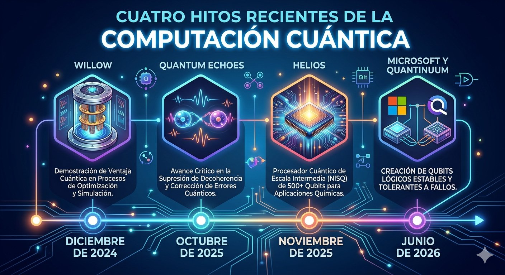

El reto: errores y cúbits lógicos
Un cúbit físico es muy sensible al ruido, así que un cálculo largo acumula errores hasta volverse inútil. La solución es la corrección cuántica de errores: se reparten los datos de un único cúbit lógico, protegido, entre varios cúbits físicos, y se revisan de forma continua para detectar fallos sin destruir la información. Los conceptos básicos están en la página de principios generales.
El costo de esta protección se mide como la cantidad de cúbits físicos que hacen falta por cada cúbit lógico. Durante años se estimaron cientos o miles; por eso los anuncios recientes se centran en reducir esa proporción y en demostrar que el error lógico baja cuando el sistema crece.
Hitos recientes
| Fecha | Organización | Avance |
|---|---|---|
| Diciembre de 2024 | Google Quantum AI | Con el chip superconductor Willow (105 cúbits), el error lógico bajó a medida que se agrandaba el código de corrección, un resultado "por debajo del umbral" buscado desde hace décadas. |
| Octubre de 2025 | Google Quantum AI | El algoritmo Quantum Echoes, publicado en la revista Nature, produjo un resultado verificable que Google reporta unas 13.000 veces más rápido que el mejor método clásico en un supercomputador. |
| Noviembre de 2025 | Quantinuum | El sistema Helios, de iones atrapados, ofrece 98 cúbits físicos y 48 cúbits lógicos con corrección de errores, una proporción cercana a 2 a 1, según la empresa. |
| Junio de 2026 | Microsoft y Quantinuum | Experimentos con hasta 12 cúbits lógicos que repiten la corrección de errores durante el cálculo y logran menores tasas de error lógico. |

Cómo interpretar estas noticias
Muchos de estos resultados son informados por las propias empresas y se refieren a tareas muy específicas. Incluso los autores del trabajo de Microsoft y Quantinuum señalan que aún se necesitan avances en hardware, decodificación en tiempo real y métodos escalables antes de contar con computadores cuánticos grandes y prácticos. Varias empresas, entre ellas IBM y Quantinuum, han publicado hojas de ruta con cientos de cúbits lógicos hacia 2029, pero son metas anunciadas y no resultados.
- Distinguir entre cúbits físicos y cúbits lógicos al comparar sistemas.
- Revisar si el resultado fue publicado en una revista científica o solo anunciado.
- Comprobar contra qué método clásico se comparó la velocidad.
- Preguntar si el problema resuelto tiene utilidad práctica, algo que se analiza en las aplicaciones potenciales.